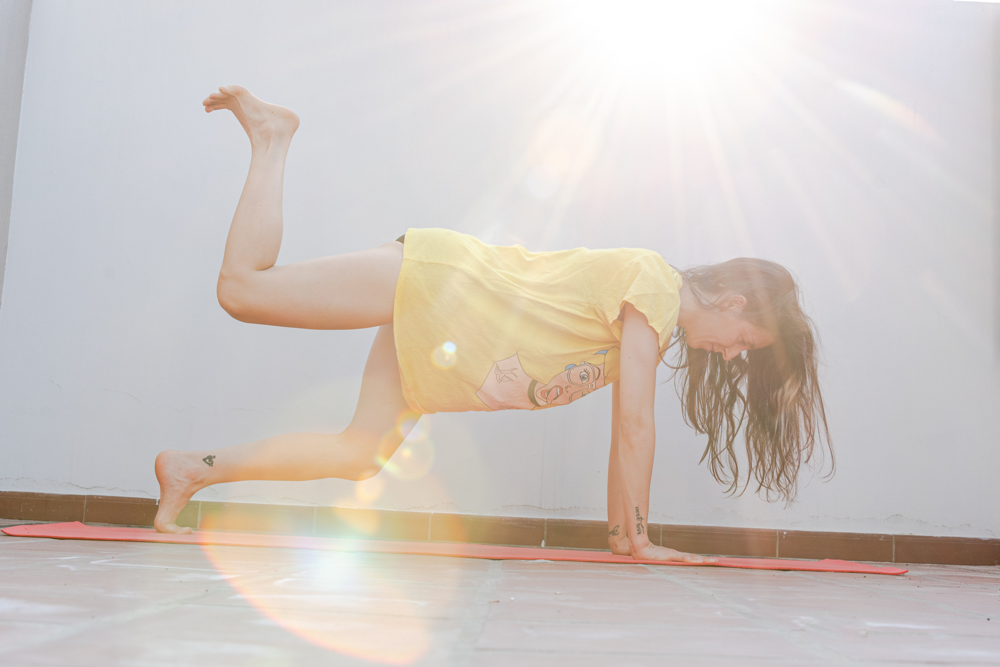
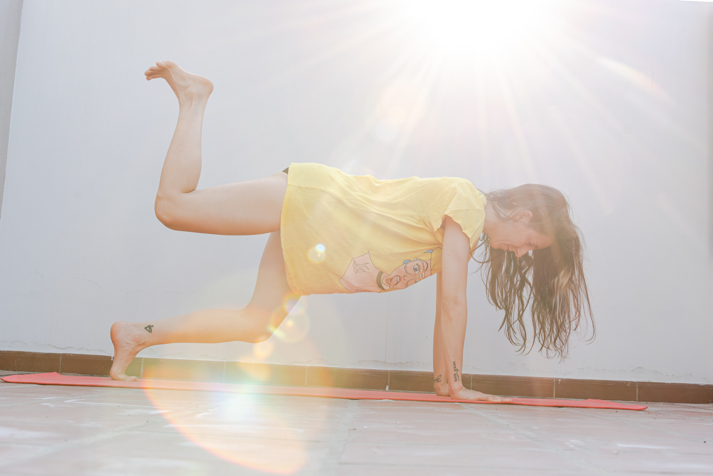

¡Elongar te cambia la vida!
 

Este es un espacio pensado para mejorar la calidad de vida de quienes se acerquen a la propuesta, ya que el desarrollo de la flexibilidad y la elongación impacta positivamente en la vida cotidiana de cualquier persona. Al mismo tiempo, en el caso de los deportistas, potencia su rendimiento.
Las clases de elongación y de flexibilidad están diagramadas con ejercicios puntuales para trabajar cada zona del cuerpo con una secuencia determinada. Se organizan en 2 partes: En la primera parte, se focaliza el trabajo de flexibilidad, fuerza y movilidad articular sobre la columna vertebral. En este primer momento, todos los ejercicios se realizan en forma individual. En la segunda parte, se focaliza el trabajo sobre las piernas, con una serie de ejercicios pautados para el mejor trabajo sobre los músculos y las articulaciones. Esta serie se realiza con un compañero como ayudante, para poder aprovechar al máximo cada segundo del ejercicio.